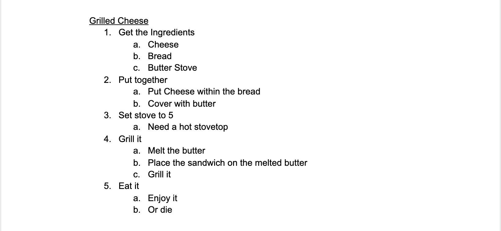

The purpose of this lab was to get into the habit of thinking in terms of pseudocoding before jumping into coding.
Phillip Guaracha and I had to elaborate a bit more on the instructions of the lab before actually diving into the pseudocoding process, and determining which actions we wanted to focus on, but after going back and forth with one another, we figured out the instructions and we figured out which task should be performed.
Below, you'll find the pseudocoding we did for an everyday task, and the pseudocoding for our computer task.
//Rock Paper Scissors //Play RPS vs AI // //Author: Phillip Guaracha and Jeremy Jacob Francisco //Date: 2/8/2021 //License: Whatever // // //Prep choices for presntation //Buttons of Rock Paper and Scissors //Each choice has a corresponding digit //Wait for User to input selection //User selects one of three choices //Evaluate data //Generate numbers //Create numbers between 1-3 //Select 1-3 at random //Sleect corresponding response //Check for Victory Condition